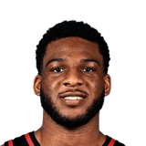

Zuby EjioforHawks player
Zuby Ejiofor on modeling his game after Aaron Gordon and OG Anunoby.
“A great person that I would like to model myself as would be Aaron Gordon or OG Anunoby, top of player, two-way capable guys. Don't need the ball in their hands necessarily to be able to impact the game, but just specializing in their roles. They know exactly what they bring to the table each and every night, and those are guys that do it on both sides of the ball.”
On Aaron Gordon, OG Anunoby
· Hawks vs. Thunder Postgame Press Conference: Zuby Ejiofor▶ Watch at 2:22